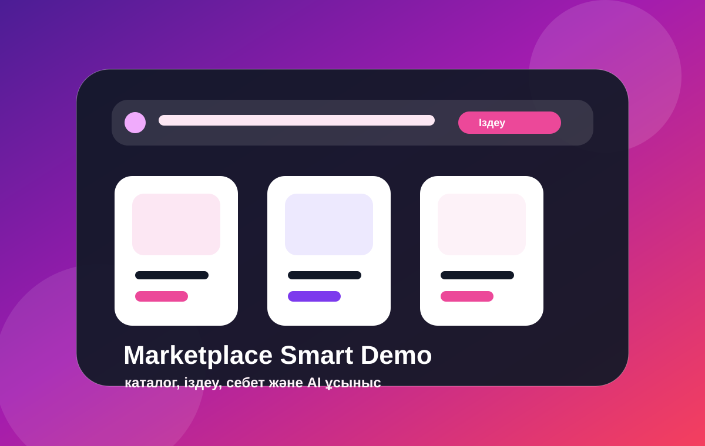
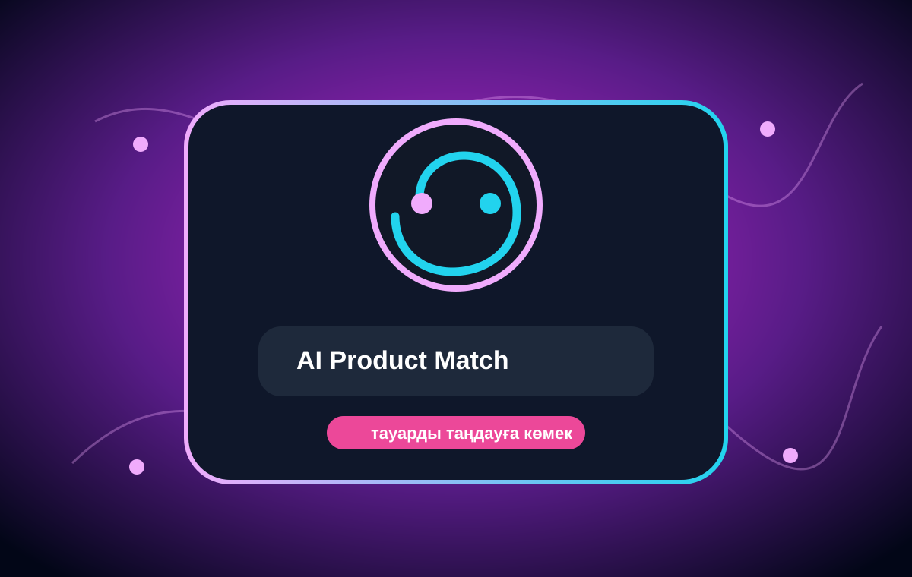
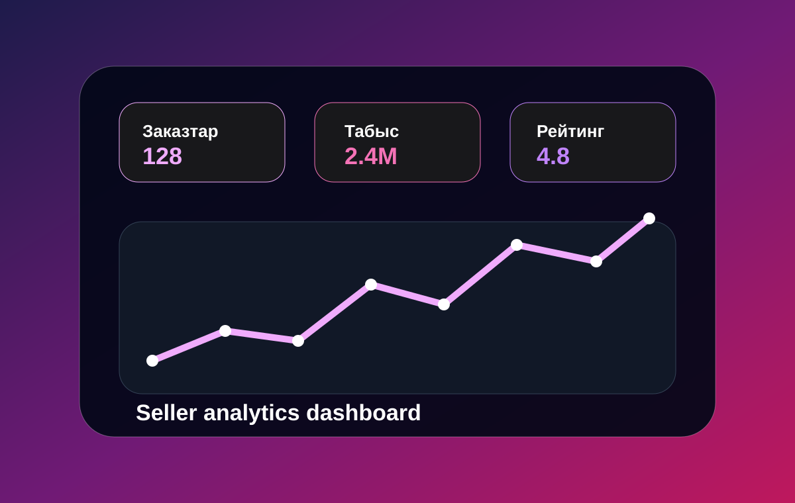

01
Каталог және себет
Тауарлар тізімі, іздеу, категория фильтрі, сорттау және себетке қосу функциясы.
Бұл сайт Wildberries тақырыбына арналған оқу жобасы. Ішінде каталог, іздеу, фильтр, себет, AI тауар сәйкестендіру, SEO атау генераторы, баға калькуляторы, логистика есептеу, сатушы dashboard, форма, аудио және видео бар.

Сайт жай ақпараттық бет емес, қолданушы басып көретін интерактивті құралдардан тұрады.
Тауарлар тізімі, іздеу, категория фильтрі, сорттау және себетке қосу функциясы.
Бюджет, мақсат және адам түріне қарай ең сәйкес тауарларды ұсынады.
Баға, пайда, логистика, SEO атау генераторы және dashboard көрсеткіштері.
Тапсырма талабына сай сайтта кемінде үш сурет бар.
Каталог, карточка және сатып алу интерфейсі.

Тауарды ақылды таңдауға арналған бөлім.

Сатушы статистикасы мен аналитика көрінісі.
Сайттың ішінде бір аудиофайл және бір бейнефайл орналасқан.
Қысқа технологиялық аудио.
Маркетплейс интерфейсі туралы қысқа видео.
Бұл оқу жобасы. Сайт ресми Wildberries сайты емес және коммерциялық қызмет көрсетпейді. Барлық функциялар демонстрация үшін жасалған.